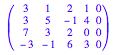

a:=matrix([[3,1,2,1,0],[3,5,-1,4,0],[7,3,2,0,0],[-3,-1,6,3,0]])

linalg::gaussJordan(a)
linalg::gaussJordan(matrix([[0,3,1,0],[0,3,1,0],[2,0,0,0],[2,0,-1,0]]))
linalg::gaussJordan(matrix([[0,-2,0,0,0],[3,0,-4,-8,0],[-3,0,-2,4,0],[-6,-6,-2,-4,0]]))

linalg::gaussJordan(matrix([[3,0,0,-2,0],[0,2,-2,1,0],[-3,3,-2,2,0],[6,1,0,1,0]]))

linalg::gaussJordan(matrix([[2,3,2,0],[-1,6,10,0],[4,2,-4,0]]))

linalg::gaussJordan(matrix([[3,2,4,0],[1,-1,0,0],[1,5,-3,0]]))

linalg::gaussJordan(matrix([[1,0,5,7,0],[3,1,6,2,0],[3,4,3,-1,0]]))
linalg::gaussJordan(matrix([[2,6,2,0],[-2,1,0,0],[0,4,-4,0]]))
linalg::gaussJordan(matrix([[-6,3,4,0],[7,2,-1,0],[2,4,2,0]]))
linalg::gaussJordan(matrix([[0,6,4,0],[3,0,-7,0],[1,5,1,0],[-1,1,3,0]]))